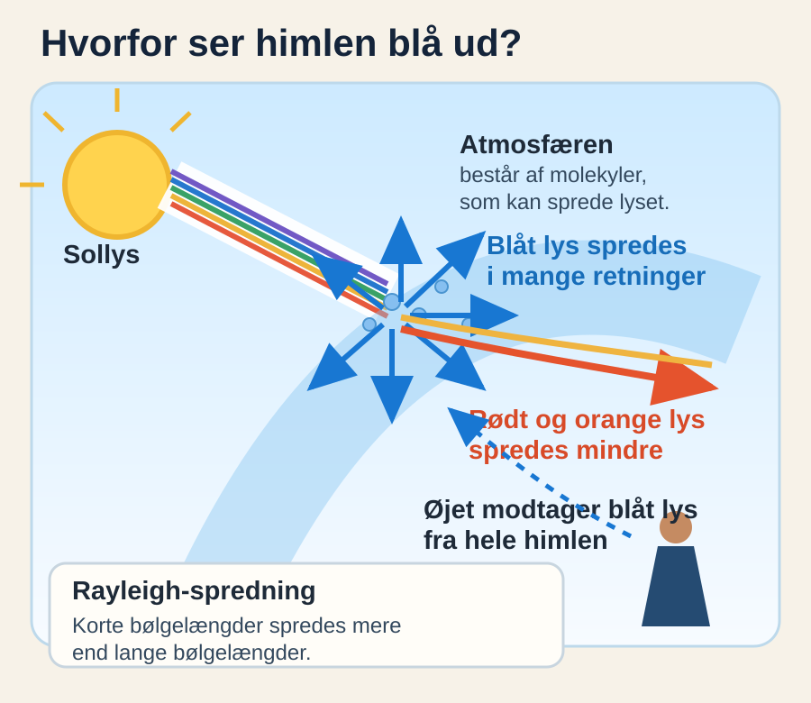
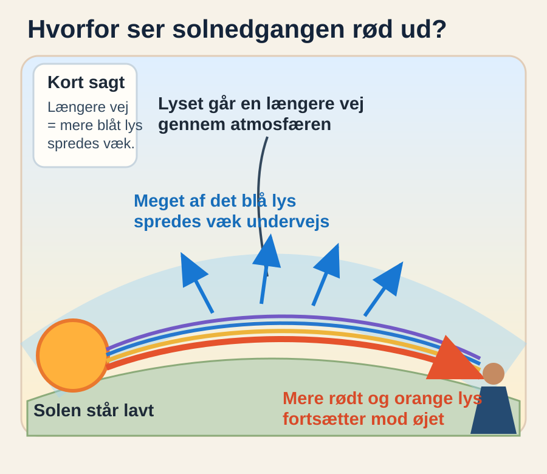

Videnskab
Derfor er himlen blå – og solnedgangen rød
Det samme sollys kan give en blå middagshimmel og en rød solnedgang. Forklaringen ligger i lysets bølgelængder og den vej, det tager gennem atmosfæren.

Solen sender ikke et særligt blåt lys ned over os. Det synlige sollys rummer hele farvespektret. Når lyset rammer Jordens atmosfære, møder det molekyler og små partikler, som kan sprede lyset i andre retninger.
De korte bølger spredes mest
Blåt lys har kortere bølgelængde end rødt lys. De små molekyler i luften spreder de korte bølgelængder mere effektivt end de lange. Derfor kommer der relativt meget blåt, spredt lys til vores øjne fra alle retninger på en klar dag.

Fænomenet kaldes Rayleigh-spredning. Det er opkaldt efter den britiske fysiker Lord Rayleigh, hvis borgerlige navn var John William Strutt. Han arbejdede i 1800-tallet med, hvordan lys spredes, og hans navn hænger derfor fast ved netop denne forklaring. Udtrykket beskriver den type spredning, der opstår, når lyset møder partikler, som er meget mindre end lysets bølgelængde. Det er altså navnet på en fysisk mekanisme, ikke på en særlig slags lys.
Hvorfor bliver aftenen rød?
Når Solen står lavt, skal lyset gennem en længere strækning af atmosfæren, før det når øjet. Undervejs bliver en større del af de korte, blå bølgelængder spredt væk fra den direkte synslinje. Det lys, der fortsætter direkte mod os, er derfor relativt rigere på røde og orange bølgelængder.

Støv, små partikler og dråber i luften samt skyer kan ændre farvernes styrke og udseende, så to solnedgange ikke behøver ligne hinanden. Grundmekanismen er dog den samme: jo længere vej sollyset har gennem atmosfæren, desto mere af det blå lys kan nå at blive spredt væk.
.jpg)